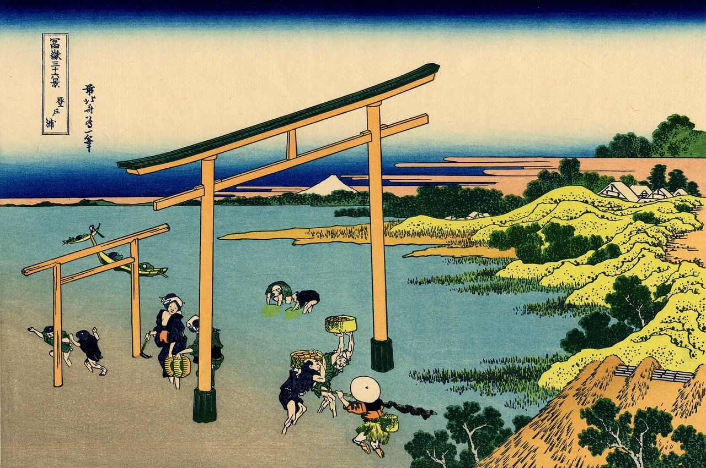

Période Kamakura 鎌倉時代 (1085-1336) La période Kamakura débute en 1085 avec la création du Shogunat dont le pouvoir est installé au Sud de Tokyo qui est le résultat direct du système de vassalité entre les daimyos大名 (gouverneurs de provinces), les samouraïs 侍 (chargés de la protection et de l’ordre) et les paysans. Ce système vient s’opposer au contrôle impérial établi depuis des décennies au Japon. Cette rivalité va perdurer longtemps et façonner les siècles suivants. C’est aussi durant la période Kamakura qu’on voit l’apparition du Bushido武士道 (code de principes moraux à respecter selon sa classe) et de la philosophie zen.Périodes Murochi-Azuchi 室町時代/安土時代 (1336-1603) Durant les périodes Muromachi et Azuchi, alors que l’empereur attaque le Shogun et le vainc une première fois ; celui-ci est à attaqué en retour. Le nouveau shogun将軍 décide alors de regrouper la cour et le shogunat à Kyoto.
L’empereur est destitué de tout pouvoir décisionnaire et militaire mais reste cependant en place. Ces périodes sont aussi glorieuses pour les Arts, avec en particuliers le théâtre Nô能楽 et les grands peintres paysagistes qui sont favorisés par les shoguns. Le théâtre Kabuki歌舞伎 ainsi que la cérémonie du thé 茶道suivront très rapidement. Le shogun, n’ayant pas de fils, décide de nommer son jeune frère comme successeur lorsqu’à la grande surprise de tous il obtient un héritier. Cet héritier qui devrait être le légitime shogun est alors supporté par une poignée de fidèles au shogun qui vont l’opposer au frère du shogun. C’est le début d’un déchirement au sein de l’élite. Au même moment, de nombreux daimyos voient ici une opportunité d’expansion de leur pouvoir et territoire.